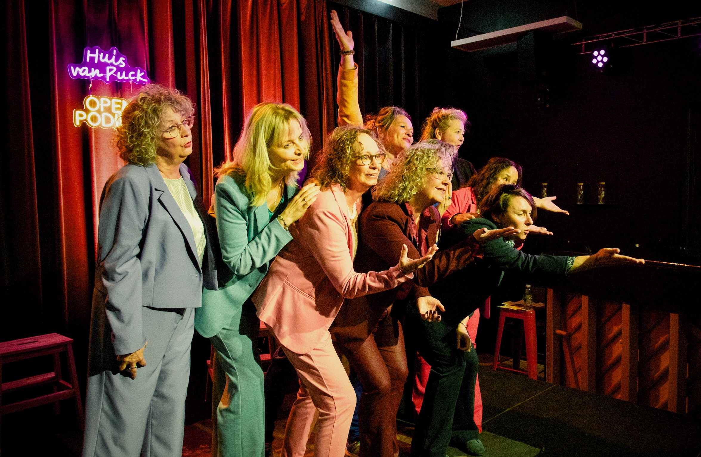
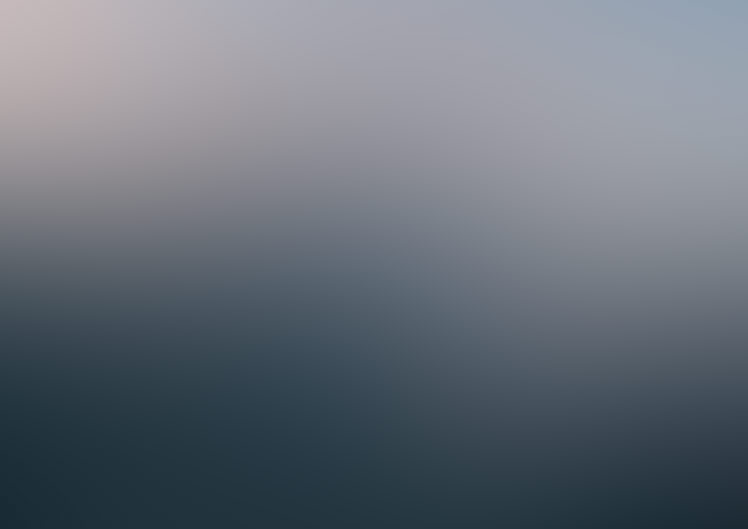
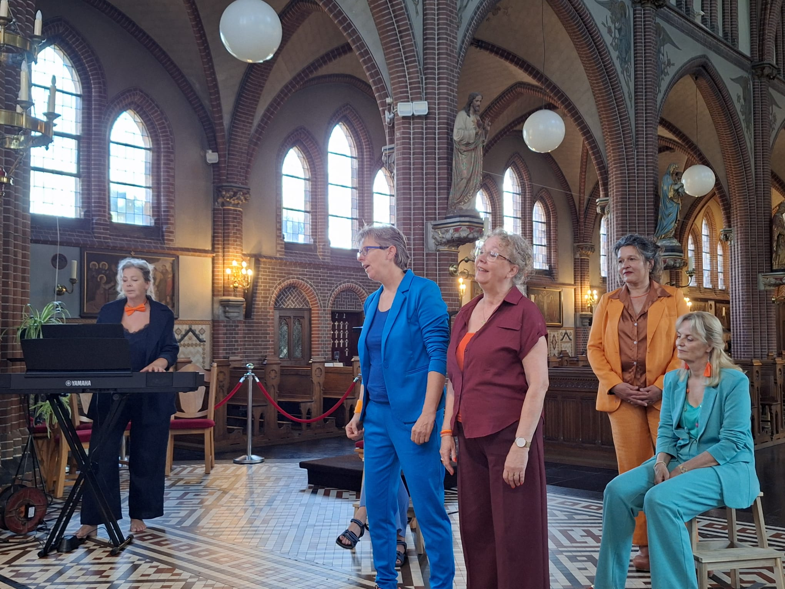
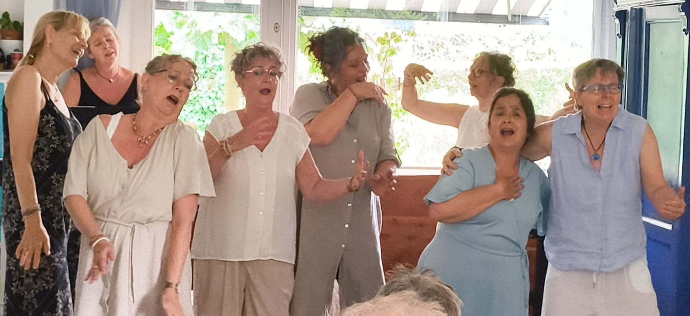
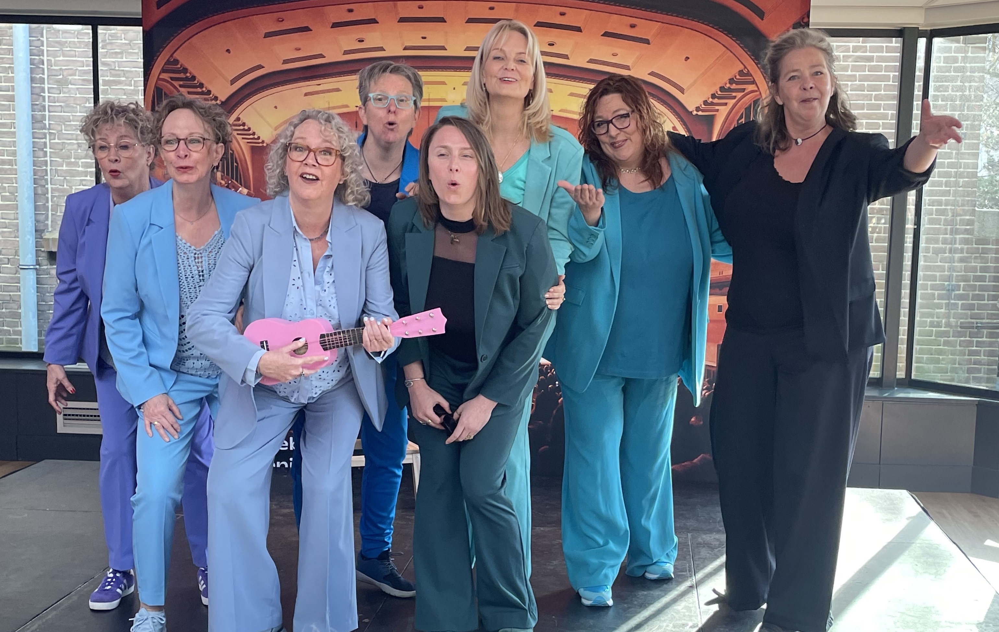
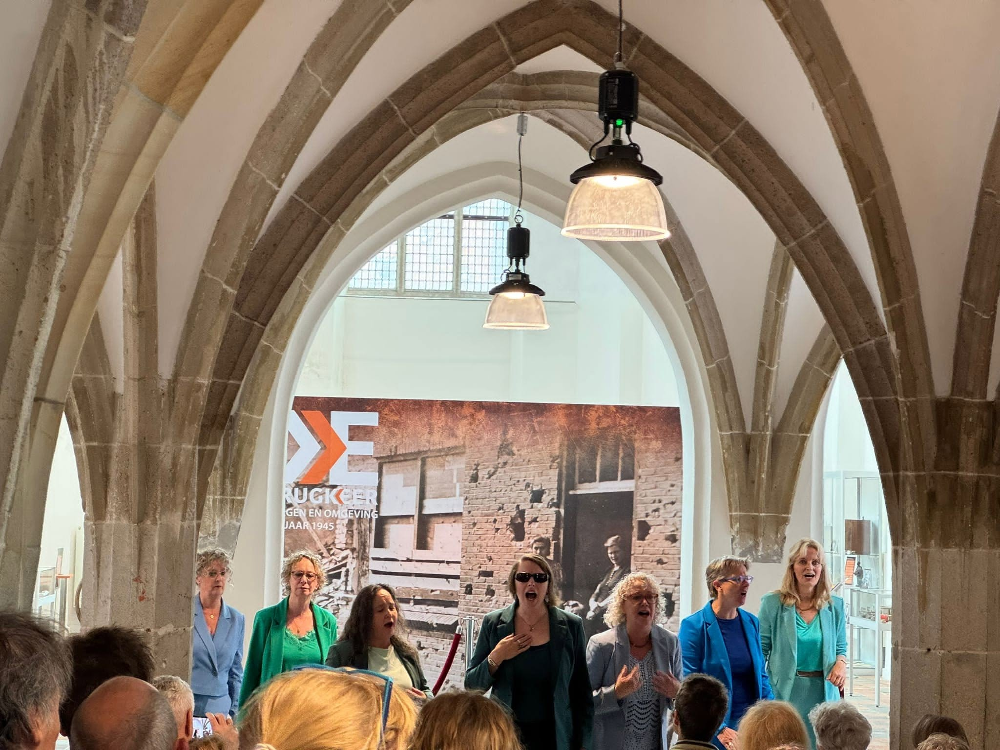
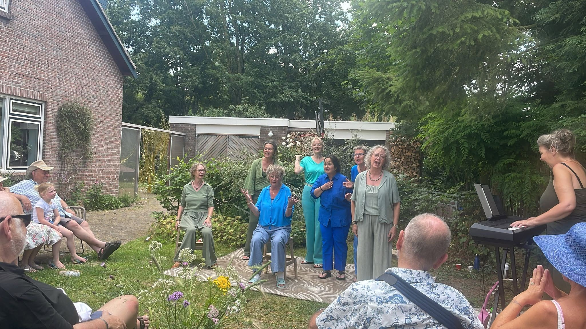

Agenda
Kom eens kijken naar ons optreden
Verwacht
| Data | Evenement | Plaats | |
|---|---|---|---|
| 13 okt | Sisters are doin' it! | Culturele kelderbroedplaats, Nijmegen | |
| 25 okt | Open Podium | De kerk van Rozendaal | Info |
Geweest
2026
Stichting MS Research

Huis van Puck

Sisters are doin' it!

Nijmegen Klinkt!

Zomers Ommetje

Gluren bij de Buren

Pleisterplaats Ressen
2025
Podium voor de Stad

Nijmegen Klinkt!

Gluren bij de Buren
